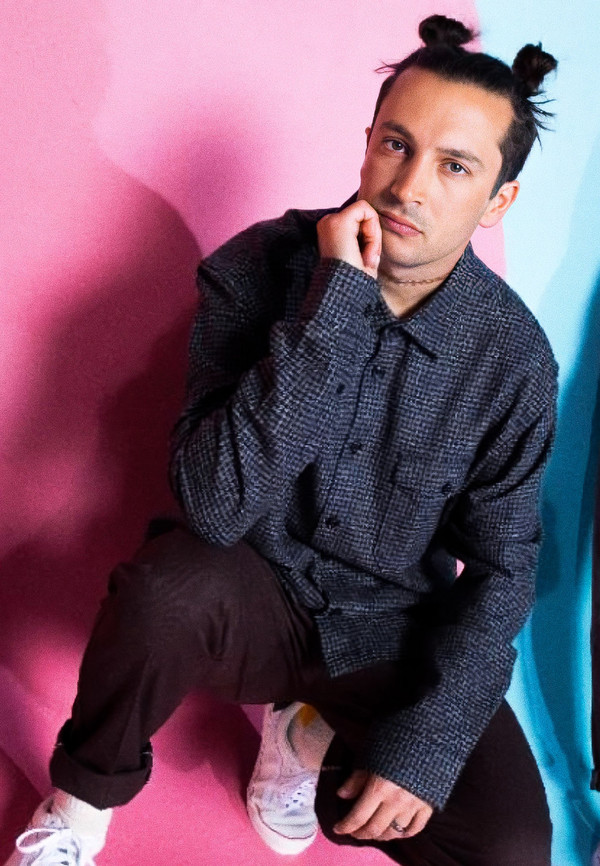
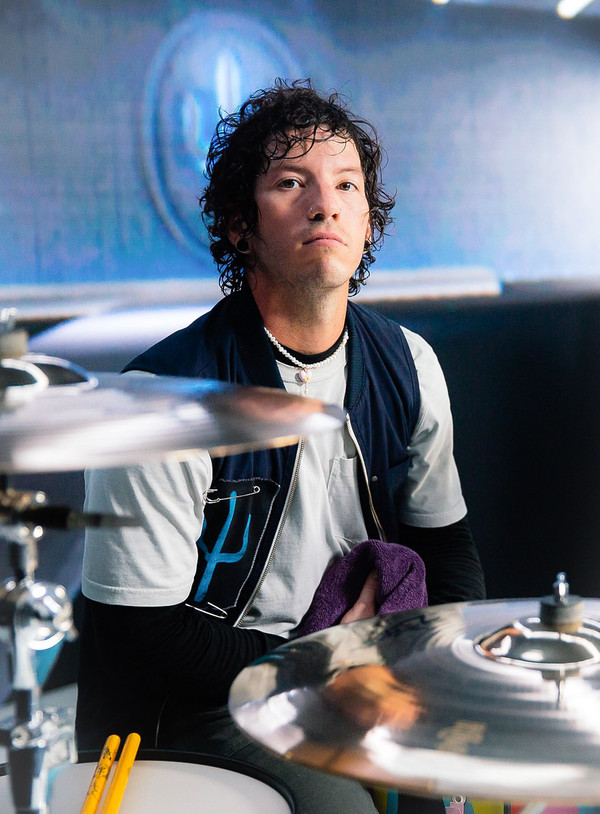
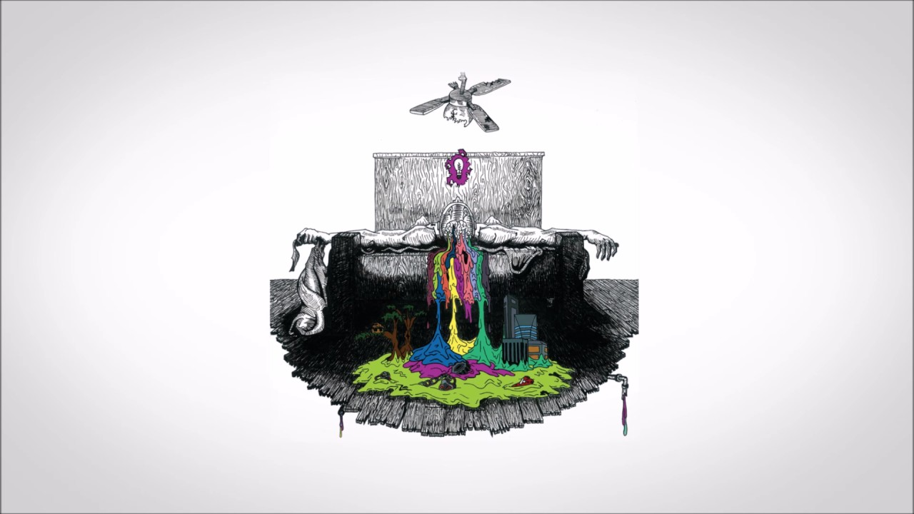
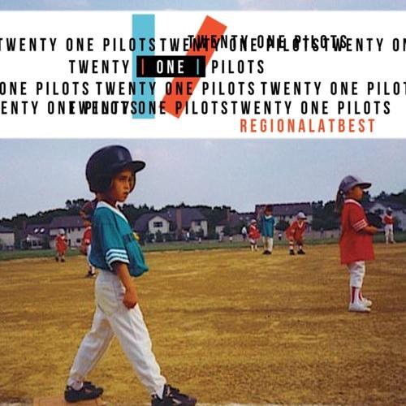

La banda se formó en 2009 por el vocalista Tyler Joseph junto con Nick Thomas y Chris Salih, quienes se fueron en 2011. Desde su partida, la formación ha consistido en Tyler Joseph y el baterista Josh Dun.
El dúo es mejor conocido por los sencillos "Stressed Out", "Ride" y "Heathens". El grupo recibió un Premio Grammy al mejor pop de dúo/grupo en los Premios Grammy de 2017.
La banda lanzó de forma independiente dos álbumes Twenty One Pilots (2009) y Regional At Best (2011), antes de ser firmada por el sello discográfico Fueled by Ramen en 2012. Su debut en el sello, Vessel, fue lanzado en 2013.
El dúo logró un éxito revolucionario con su cuarto álbum, Blurryface (2015), que produjo los exitosos sencillos "Stressed Out" y "Ride" y se convirtió en el primer álbum en la historia en el que cada canción recibió al menos una certificación de oro de la Asociación de Industria Discográfica de Estados Unidos. El lanzamiento del sencillo "Heathens" también convirtió al grupo en el primer artista alternativo en tener dos sencillos entre los diez mejores concurrentes en los Estados Unidos. El quinto álbum de estudio del dúo, Trench , fue lanzado el 5 de octubre de 2018. El 21 de mayo de 2021, el dúo lanzó el álbum Scaled and Icy.

Tyler Joseph
Creció junto con tres hermanos, Zack, Jay y Madison.
Su madre, Kelly, era profesora de matemáticas en el distrito escolar de Olentangy antes de pasar a ser entrenadora de baloncesto en la escuela Olentangy Orange High School en 2013.
Su padre, Chris, también trabajó como entrenador en la escuela Worthington Christian High School desde 1996 hasta 2005, y actualmente es director de escuela.
Joseph jugó al baloncesto desde muy temprana edad, y jugó como base en la escuela de su madre.
En 2008, el equipo de baloncesto de Joseph quedó en segundo lugar en un torneo estatal.
Después de ver a un compositor en el club High Street, rechazó una beca de baloncesto de la Universidad de Otterbein, y comenzó a tocar música después de encontrar un viejo teclado en su armario.

Josh Dun
Tiene dos hermanas, Ashley Dun y Abigail Dun, y un hermano, Jordan Dun. De acuerdo con Josh Dun, aprendió a tocar la batería por su cuenta, y cuando era niño no tenía permitido escuchar música pero se colaba a una tienda de música una vez a la semana y allí pedía sugerencias a la gente.
Trabajó en una tienda de Guitar Center durante tres años, junto con el exbaterista de Twenty One Pilots, Chris Salih.
Josh se unió temporalmente a la banda de rock alternativo "House of Heroes", en marzo de 2010, luego de que el exbaterista, Colin Rigsby, se tomase un descanso para poder pasar más tiempo con su familia, fue recomendado a la banda por el propio Rigsby.
Formó parte del tour de House of Heroes hasta octubre de ese mismo año, cuando Rigsby regresó a sus deberes.
Discografia

Twenty One Pilots
(2008)

Regional At Best
(2011)

Vessel
(2013)

Blurryface
(2016)

Trench
(2018)